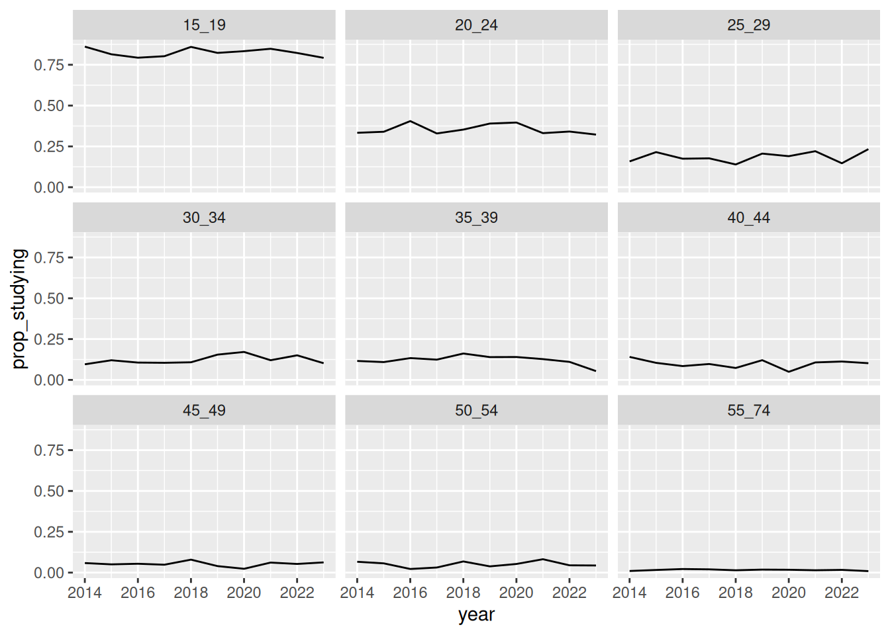
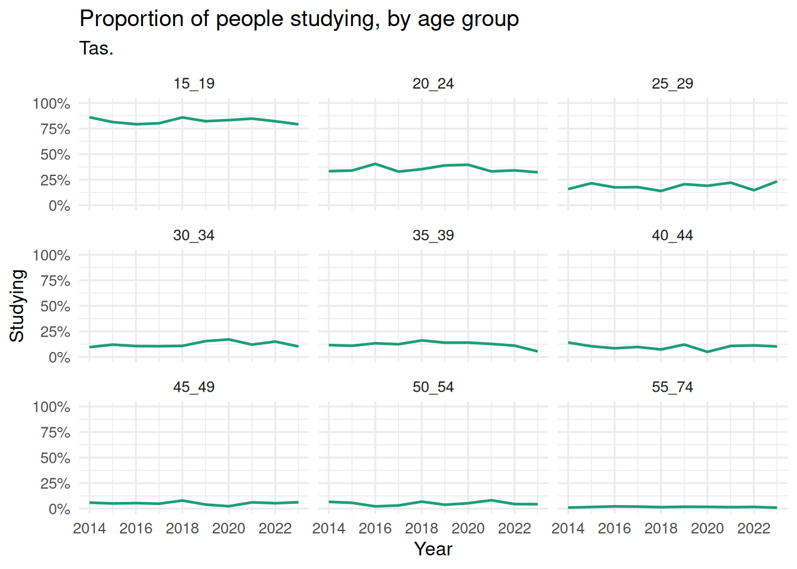
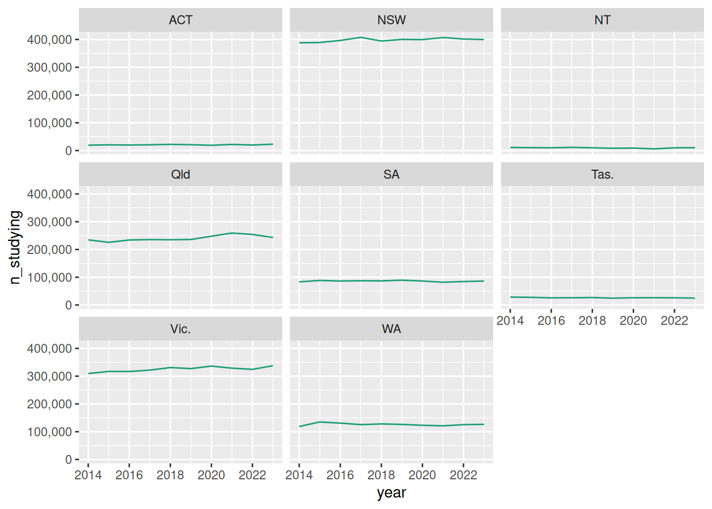
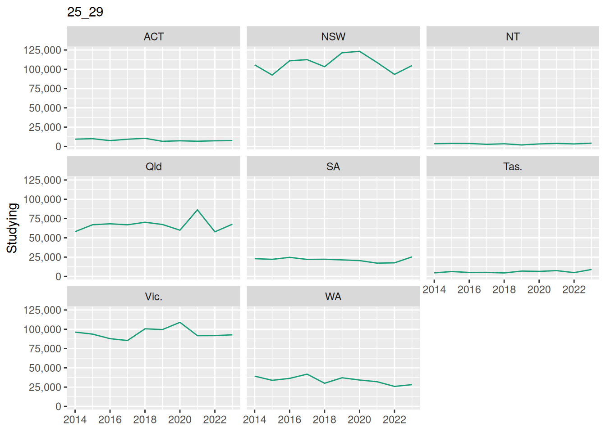

3 Outside-in, inside-out
When writing functions, I think there are two ways general ways to write them:
- Top Down: Write the function as if it already exists and I can use it, then go and define it.
- Bottom Up: Adapt code you’ve already written and you know works, into a new function.
Writing top-down code can also be called pseudocoding, although that has its own specific and special definition in computer science/algorithms.
I like Top Down, Bottom Up. But I named this chapter/idea “Outside in, Inside Out” a little while ago.
Overview
Duration 60 minutes
Questions
- How do I write a function before I know it works?
- How do I pull a function out of code?
- Which way should I start writing functions, and should you write one at all?
- What do I do when the first version of a function is wrong?
What you need this session
- A session of RStudio open, in the same folder as last time.
- Something to draw on - a pen and paper.
{fnmate}, if it installed for you. Not required.
education_path <- function(year) {
here(glue("data/tidy/education_{year}.csv"))
}
year_from_path <- function(path) {
basename(path) |>
parse_number()
}
read_education <- function(year) {
files <- education_path(year)
education_raw <- read_csv(files, id = "path")
education_raw |>
mutate(year = year_from_path(path)) |>
select(-path)
}
pct_studying <- function(data, age = "25_29") {
data_summary <- data |>
filter(age_group == age) |>
summarise(
total_studying = sum(n_studying),
total_population = sum(population)
) |>
mutate(pct = round(total_studying / total_population * 100, 1))
data_summary
}
education <- read_education(2014:2023)
tas_2023 <- education |>
filter(year == 2023, state_territory == "Tas.")3.1 Outside-in
Outside-in means you write the function as if it already exists.
I find it really useful to imagine a workflow, or a script.
Let’s discuss an example from what we’ve done so far.
If we knew our goal was:
Make a plot of education numbers for each state of Australia, over time.
And we had one input: Education Data.
I might break these steps down as:
- Read in the data
- Tidy up the data
- Plot the data.
Now, I might sketch that out, with function names that match those steps:
A very important idea here is that this code doesn’t need to work! You’re just hashing out the ideas.
The point is to get used to creating functions from scratch, and thinking about them, and how they work.
For example, you might change the idea of the read_education data, to have two functions, one that read all the data from a directory, and one that reads a given year:
The point is to imagine the interface.
let’s go back to the question we set ourselves in chapter 1:
How many Australians are studying, by age group and by state, and is that changing?
We can do a lot of that already! The changing part is still open. So what do I actually want to type?
Let’s run through this live. Here are a few comments to guide the live-coding
We ended up with something like:
We wrote read_education() in chapter 1, and filter() is from dplyr.
I also find it really useful and interesting to sketch out a plot by hand - even if it is terrible - it helps me get a sense of what the data should be under the plot.
So outside-in has handed me exactly one thing to build. It has also told me:
- Function names
- Its inputs
- Its outputs
I didn’t have to write ggplot code, and get stuck in the specifics of aes(), facets, theming, etc.
Those are all questions to consider! But we can think about them later.
The thing I like about writing code like this is that it keeps you at a higher, courser level of the analysis. It’s kind of like storyboarding.
Using {fnmate}
{fnmate} is by Miles McBain, who also gave us DRRY. It is an R package to help you rapidly template R functions. It fits alongside other “ergonomic” R packages like {usethis}.
It’s OK if fnmate didn’t install, you can see instructions on how to do that in the Setup chapter.
We can use {fnmate} to write the skeleton for you.
Put your cursor on a function, like plot_study_over_time(tas), run the addin, and it writes this:
I love this. It defined the function based on how you wrote the signature.
Notice:
- It named the argument
tas, becausetasis what was provided. I might rename that todata. - The body is
NULL, so the function can run, but returns nothing. We didn’t need to put NULL in there, but it’s kind of like a signal - like when you have a page in a report that says: “This page is intentionally blank”.
Setup code
library(countdown)
library(dplyr)
library(readr)
library(ggplot2)
library(scales)
library(glue)
library(here)
education_path <- function(year) {
here(glue("data/tidy/education_{year}.csv"))
}
year_from_path <- function(path) {
basename(path) |>
parse_number()
}
read_education <- function(year) {
files <- education_path(year)
education_raw <- read_csv(files, id = "path")
education_raw |>
mutate(year = year_from_path(path)) |>
select(-path)
}
pct_studying <- function(data, age = "25_29") {
data_summary <- data |>
filter(age_group == age) |>
summarise(
total_studying = sum(n_studying),
total_population = sum(population)
) |>
mutate(pct = round(total_studying / total_population * 100, 1))
data_summary
}
education <- read_education(2014:2023)
tas_2023 <- education |>
filter(year == 2023, state_territory == "Tas.")Somebody asks you:
which state has the biggest gap in education numbers between the youngest and the oldest age groups? Is that gap closing over time?
Write some R code from this “outside in” / “top down” / pseudocode approach. You don’t need to write out the entire function. Just the signature.
- Write out the steps you need to take to answer this question.
- Based on the steps, write the function pseudocode, top to bottom
- For each function, write what goes in to its arguments and what comes out.
- Do any of the functions already exist?
I find it can be really useful to sketch out plots and data structures here before you start
One possible answer
which state has the biggest gap in education numbers between the youngest and the oldest age groups? Is that gap closing over time?
- Read education data
- Filter data down to the youngest and oldest age groups per state
- Pivot data wider to youngest and oldest
- Calculate the difference between youngest and oldest, for each year
- Plot this: X axis is time. Y axis is difference. Facet per state?
It’s OK if yours look different, that’s fine! What we want to focus on is if you can focus on what goes in and out of each of the functions.
read_education() already exists, and the other two don’t.
Takehomes
- Outside-in is where you write the function signature before the function body
- This names:
- the function,
- its inputs,
- its outputs
- Keep you at a higher level of analysis. You don’t get bogged down in details
{fnmate}can help you rapidly prototype functions
3.2 Inside-out
Inside-out is the converse of “outside in”.You write code, get it working, then pull/extract a function.
Let’s focus on our question:
How many Australians are studying, by age group and by state, and is that changing?
Let’s build plot_study_over_time() by going inside-out.
Start small, with one state and one age group.
# A tibble: 10 × 6
state_territory age_group n_studying population prop_studying year
<chr> <chr> <dbl> <dbl> <dbl> <dbl>
1 Tas. 15_19 28.5 33.1 0.861 2014
2 Tas. 15_19 27.6 33.9 0.814 2015
3 Tas. 15_19 25.7 32.4 0.793 2016
4 Tas. 15_19 26 32.4 0.802 2017
5 Tas. 15_19 26.9 31.3 0.859 2018
6 Tas. 15_19 24.6 29.9 0.823 2019
7 Tas. 15_19 26 31.2 0.833 2020
8 Tas. 15_19 26.2 30.9 0.848 2021
9 Tas. 15_19 25.9 31.5 0.822 2022
10 Tas. 15_19 24.8 31.3 0.792 2023Ten rows, one per year.
Sketch the plot before you look. Put year along the bottom and n_studying up the side. Does the line go up, down, or stay flat across the ten years?
Draw your guess, then run the code.
Your sketch doesn’t need to be great!
Now go back to your drawing. Does it looks sort of what you expected?
Worth a caution before you read too much into it. The number of 15 to 19 year olds in Tasmania fell over the same period, from 33,100 to 31,300. Fewer people studying is not the same as a smaller share of them studying. Maybe we need to look at the proportion of people?
Making more lines
Let’s make the plot for the other states and territories.
So drop the age filter - just filter down to each state. Then, give each age group its own little panel with facet_wrap():
# A tibble: 90 × 6
state_territory age_group n_studying population prop_studying year
<chr> <chr> <dbl> <dbl> <dbl> <dbl>
1 Tas. 15_19 28.5 33.1 0.861 2014
2 Tas. 20_24 10.6 31.8 0.333 2014
3 Tas. 25_29 4.6 29.1 0.158 2014
4 Tas. 30_34 2.8 29.3 0.0956 2014
5 Tas. 35_39 3.4 29.3 0.116 2014
6 Tas. 40_44 4.8 34.1 0.141 2014
7 Tas. 45_49 2 34.2 0.0585 2014
8 Tas. 50_54 2.5 37.7 0.0663 2014
9 Tas. 55_74 1.2 121. 0.00988 2014
10 Tas. 15_19 27.6 33.9 0.814 2015
# ℹ 80 more rows
OK, that is what I wanted. Now we can make it nicer, which can be a bit fiddly.
What changes do you think you’d like to make?
For me, these are:
- Make the lines have a colour
- Make thicker lines
- Label the y axis to have percentage
- Set the y axis to be from 0 to 100%
- Give the plot x, y, title, and subtitle
- Use the overall theme,
theme_minimal()
ggplot(tas,
aes(x = year, y = prop_studying)) +
geom_line(colour = "#1B9E77", linewidth = 0.8) +
facet_wrap(~age_group) +
scale_y_continuous(labels = scales::label_percent(),
limits = c(0, 1)) +
labs(
x = "Year",
y = "Studying",
title = "Proportion of people studying, by age group",
subtitle = "Tas."
) +
theme_minimal(base_size = 12)
OK, so we’ve got a few steps here, the point was to show that going from inside-out; bottom up is a process.
Wrapping up: adding state
Let’s focus back on the rest of the question:
How many Australians are studying, by age group and by state, and is that changing?
Let’s focus on getting this per state.
Everything else in the code will work for all states, not just tasmania.
Let’s write out the code for all states:
ggplot(education,
aes(x = year, y = prop_studying, colour = state_territory)) +
geom_line(linewidth = 0.8) +
facet_wrap(~age_group) +
scale_y_continuous(labels = label_percent(),
limits = c(0,1)) +
labs(
x = "Year",
y = "Studying",
title = "Proportion of people studying, by age group and state"
) +
theme_minimal(base_size = 12)
Now, can we update this to be a function.
Name the function - what are its arguments?
Then paste in the code into the body - make sure you change the DATA!
plot_study_over_time <- function(data){
ggplot(data,
aes(x = year, y = prop_studying, colour = state_territory)) +
geom_line(linewidth = 0.8) +
facet_wrap(~age_group) +
scale_y_continuous(labels = label_percent(),
limits = c(0,1)) +
labs(
x = "Year",
y = "Studying",
title = "Proportion of people studying, by age group and state"
) +
theme_minimal(base_size = 12)
}Remember, because we return a ggplot2 plot, we can update it with ggplot code:
Setup code
library(countdown)
library(dplyr)
library(readr)
library(ggplot2)
library(scales)
library(glue)
library(here)
education_path <- function(year) {
here(glue("data/tidy/education_{year}.csv"))
}
year_from_path <- function(path) {
basename(path) |>
parse_number()
}
read_education <- function(year) {
files <- education_path(year)
education_raw <- read_csv(files, id = "path")
education_raw |>
mutate(year = year_from_path(path)) |>
select(-path)
}
pct_studying <- function(data, age = "25_29") {
data_summary <- data |>
filter(age_group == age) |>
summarise(
total_studying = sum(n_studying),
total_population = sum(population)
) |>
mutate(pct = round(total_studying / total_population * 100, 1))
data_summary
}
education <- read_education(2014:2023)
tas_2023 <- education |>
filter(year == 2023, state_territory == "Tas.")Here is some code that looks at the a similar question, but facets by state. Can you make this into a function where you can change the age group?

Turn it into plot_age_over_time().
- Copy. Make an empty function and paste the code into the body. Change nothing yet.
- Identify. What changes between uses? That is your argument.
- Abstract. Replace the hard coded part with the argument name.
- Check. You should get the same plot you started with.
- Default. Give
agea default, soplot_age_over_time(education)works on its own.
Answer
Only open this if you have had a go.
plot_age_over_time <- function(data, age = "15_19") {
data |>
filter(age_group == age) |>
ggplot(aes(x = year, y = n_studying)) +
geom_line(colour = "#1B9E77") +
facet_wrap(~state_territory) +
scale_y_continuous(labels = label_number(scale = 1000, big.mark = ",")) +
labs(x = NULL, y = "Studying", subtitle = age)
}
plot_age_over_time(education, age = "25_29")
I added a subtitle while I was in there, for fun.
Here is some code I actually wrote while making this chapter. It compares the youngest and oldest age groups in a state.
[1] 78.3It works. It’s also two blocks of three lines that differ by one string, and it only does Tasmania in 2023.
Turn it into a function, using the same four steps: copy, identify, abstract, iterate.
Then check you get the same answer you started with, because it’s very easy to tidy something into a different result.
One possible answer
[1] 78.3This one reuses pct_studying() from chapter 2 rather than writing the sum out twice.
If your first answer did write it out twice, that’s completely normal, and noticing afterwards is the skill.
Takehomes
- Inside-out means starting from code that works, and finding the function in it
- Copy, identify what changes, abstract it into an argument, then iterate
- A warning names a symptom, and not always the cause
- A function is where a fix goes, so every caller gets it
3.3 Which way to write functions? Do you need a function?
So which one do you reach for?
- Outside-in I usually write this when I’m starting a new project and want to sketch out how I think all the pieces will work together. I know that this will change a lot. It really helps me plan things out, and storyboard the ideas.
- Inside-out when I have something working, but I can’t see the shape yet. Making a function can even faciltate exploration!
You also don’t need to write a function.
For example ,ggplot2 often expresses itself so well, sometimes wrapping it up in a function just doesn’t end up being worthwhile.
Think about a project of your own.
- Which way did you get there? Did you plan the functions, did they fall out of code you had already written?
- Is there something you would write outside-in now.
- Is there a function you wrote you would leave as plain code today. What did it cost you?
There are no wrong answers!
Takehomes
- Outside-in when you know what you want, inside-out when you have something working
- You can do both!
- You also don’t have to write a function at all!
3.4 Iteration is normal
plot_study_over_time() took a few goes in this chapter. This iteration is part of the process!
Nobody gets the interface right on the first shot. Well maybe you get lucky. But you typically iterate! Writing code is writing. A first draft is rough, but it gives you a starting point.
You will get faster, as you get more practice. And as you get faster, you will have greater capacity to do more, learn more. You won’t need to iterate as much. But not all the time!
Takehomes
- Writing functions is writing. The first draft might be rough, but that’s normal.
- Names change as functions grow, that is progress
- Moving a line into a different function is normal work, not a mistake
Summary
- Outside-in writes the function first. Give it a name, state the inputs, outputs.
- Inside-out starts from working code Copy, identify what changes, abstract it, iterate.
- You don’t need to write a function.
- It takes iteration. People rarely get it right the first time. Writing functions is writing.
In the next session we talk about how to open up and explore inside a function.